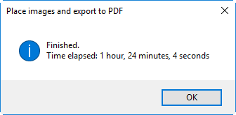

Functions for Date & Time
Get date
function GetDate() {
var date = new Date();
if ((date.getYear() - 100) < 10) {
var year = "0" + new String((date.getYear() - 100));
}
else {
var year = new String((date.getYear() - 100));
}
var dateString = (date.getMonth() + 1) + "/" + date.getDate() + "/" + year + " " + date.getHours() + ":" + date.getMinutes() + ":" + date.getSeconds();
return dateString;
}
Change time by Peter Kahrel
The function's first parameter is a string specifying the number of hours to add or subtract, the second parameter indicates the clock type, 12 or 24 hrs. Sample calls:
change_time ("-1", 24); // subtract 1 hour, using a 24-hr clock
change_time ("+3", 12); // add 3 hours using a 12-hr clock
function change_time (n, clocktype)
{
app.findGrepPreferences = null;
app.findGrepPreferences.findWhat = '\\d\\d?(?=:\\d\\d)';
var hr, hours = app.documents[0].findGrep();
for (var i = hours.length-1; i > -1; i--)
{
hr = eval ("Number(hours[i].contents)" + n);
if (hr >= clocktype)
hr = hr - clocktype;
else
if (hr < 0)
hr = clocktype-Math.abs(hr);
hours[i].contents = String (hr);
}
}
change_time ("-1", 24);
Current time
alert(currentTime());
function currentTime() {
var date = new Date();
var str = '';
var timeDesignator = ' T';
function _zeroPad(val) { return (val < 10) ? '0' + val : val; }
str = (date.getFullYear() + '-' +
_zeroPad(date.getMonth()+1,2) + '-' +
_zeroPad(date.getDate(),2));
str += (timeDesignator +
_zeroPad(date.getHours(),2) + ':' +
_zeroPad(date.getMinutes(),2) + ':' +
_zeroPad(date.getSeconds(),2));
return str;
};
Get duration

function GetDuration(startTime, endTime) {
var str;
var duration = (endTime - startTime)/1000;
duration = Math.round(duration);
if (duration >= 60) {
var minutes = Math.floor(duration/60);
var seconds = duration - (minutes * 60);
str = minutes + ((minutes != 1) ? " minutes, " : " minute, ") + seconds + ((seconds != 1) ? " seconds" : " second");
if (minutes >= 60) {
var hours = Math.floor(minutes/60);
minutes = minutes - (hours * 60);
str = hours + ((hours != 1) ? " hours, " : " hour, ") + minutes + ((minutes != 1) ? " minutes, " : " minute, ") + seconds + ((seconds != 1) ? " seconds" : " second");
}
}
else {
str = duration + ((duration != 1) ? " seconds" : " second");
}
return str;
}
Prototype for Date function
Date.prototype.dayName = function() {
var myDay = ['Sunday','Monday','Tuesday','Wednesday','Thursday','Friday','Saturday'];
return myDay[this.getDay()];
}
Date.prototype.monthName = function() {
var myMonth = ['January','February','March','April','May','June','July','August','September','October','November','December'];
return myMonth[this.getMonth()];
}
var myToday = new Date;
alert((myToday.dayName() + ', ' + myToday.getDate() + ' ' + myToday.monthName() + ', ' + myToday.getFullYear()));
function getFormattedDateString
Returns a formatted String
function getFormattedDateString(date, addTime) {
if (addTime) {
return date.getFullYear() + "-" + pad(date.getMonth() + 1, 2) + "-" + pad(date.getDate(), 2) + "_" + pad(date.getHours(), 2) + "-" + pad(date.getMinutes(), 2) + "-" + pad(date.getSeconds(), 2);
}
else {
return date.getFullYear() + "-" + pad(date.getMonth() + 1, 2) + "-" + pad(date.getDate(), 2)
}
}